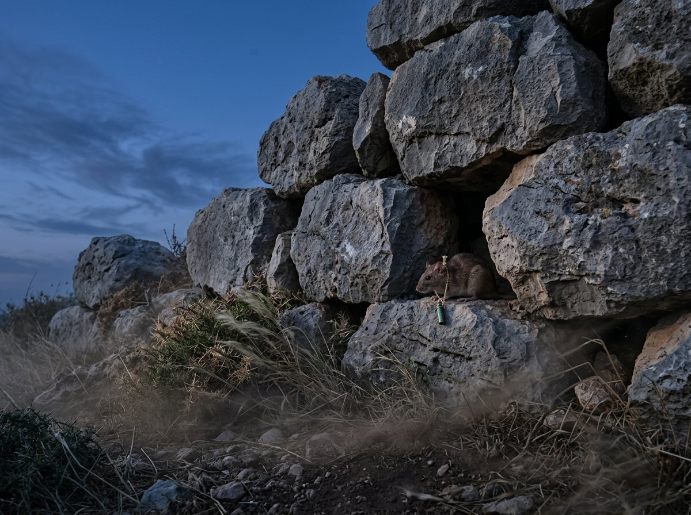

Keeping Order Among Liarsfour bandits, one loot scroll, and a job that passes from hand to hand
Four copies, one liar, and a wind nobody can see drop. Who decides what order the entries go in?
On the crown, one bandit numbers the entries and the others echo the number twice.
↓ Scroll. Things unfold.
First, in machine terms
Many copies, one order
A service is kept on several computers. Every honest copy must apply the same commands in the same order, even when some copies lie.
Up to f of 3f + 1 machines may be faulty, and a faulty one may lie, the leader included. With four machines, one.
Messages may take any time at all. Order must hold whatever the delays. Progress needs only that delays stop growing without bound.
Castro and Liskov (1999): three phases of messages order each command, and a view change replaces a faulty leader without losing what was already committed.
This edition tells it with four bandits, a scroll of their loot, and trained rats.
Same commands, two orders
Two copies of a service both hold 3. Two commands arrive: add 1, and double it.
The crown of Mount Phyle
Four posts, none in sight of another
Number 1, the chief, sits inside the ring wall with the loot. Numbers 2, 3 and 4 hold posts out on the slopes.* With four bandits, one may lie.
Only ratsWord goes by trained rat, under seal rings that no one can counterfeit.
Nobody learns who liesNobody on the crown, or below it, ever finds out which.
A windOn these nights a wind can hold the rats in their holes for as long as it blows. When it drops, runs are short again.* Nobody can tell when it has dropped.
What the four keep
The loot scroll
The four keep a scroll of the loot, one copy at each post: where each strongbox lies, and whose share it is.
The scroll grows by entries. An entry is one record about the loot, the third strongbox lies in the north cleft or the silver cups are Number 3's share. Any bandit may file one. Why must every copy take the entries in the same order? Because an entry's effect depends on what the scroll already says.
These are later nights of the siege. The sandglasses were turned together once, on the first night, and never again.*

What the four owe each other
Order
Every honest copy takes the same entries in the same order. The scroll behaves as though one keeper wrote every entry at a single moment between its filing and its standing.*
What the four owe each other
Going on
Every entry an honest bandit files stands in the end, once the wind has dropped for long enough.
Why each of them
Any wind, and no promise
Order must hold in any wind, because nobody can see the wind drop. Going on cannot be promised while it blows: if four bandits could promise to agree on anything with the rats held in their holes for any time, the mercenaries at the foot could agree whether to attack.*
Stated formally · what the four owe each other
Safety: the service is linearizable. Liveness: clients eventually receive replies, provided at most ⌊(n − 1)/3⌋ replicas are faulty and delay(t) does not grow faster than t indefinitely. (Castro and Liskov, §2–3.)
Who numbers the entries
The chief's job
Entries need numbers, so that every copy can take them in one order. Numbering is a job, held by one bandit at a time. Is it the chief's by right? No. The chief is a job, not a rank.*
The job starts with Number 1, the chief inside the ring wall. When it passes, it passes in number order: 1, 2, 3, 4, then 1 again. Each spell in the job is a term, and terms are counted, so the count says who holds the job.
A bandit who wants an entry seals it and sends it to the holder. The holder gives it the next number. Then the others make sure of it, and at the end every honest bandit writes the entry into their copy, in number order, and sends the filer a sealed word that it stands.
Who may hold the job? Anyone, including the one who lies. So nothing the holder says is trusted on its own. Everything below is built against a holder who may:
Suppose the holder
Gives two entries the same number
Two different entries, one number.
Suppose the holder
Tells different bandits different things
One entry to some, another to the rest.
Suppose the holder
Sits on an entry
The entry is filed and nothing is numbered.
How does a bandit know their entry stands? The paper's rule for a filer who is not one of the keepers is to wait for two matching sealed words from different bandits. With one liar, two matching words include an honest one. Do the four need that rule? No. An honest bandit keeps a copy, and when the entry stands in their own copy, they know it stands. The rule is for a filer from outside the four, and there is none.
One entry, from filing to standing
Two echoes
The bandits echo the holder's number, twice. An entry stands only after the holder has numbered it and the others have echoed it twice. Every rat here is sealed, and every bandit keeps every sealed rat they take in. Scroll slowly: the picture moves with you.
1 · The filing
An entry is filed
Number 2 wants an entry written. They seal it and send it to the holder of the job, Number 1.
2 · The numbering
Number 1 numbers it
The holder gives the entry a number, 7, and sends the numbering to the others. The wind holds back the rat to Number 4, and nobody waits for it.
3 · The first echo
The numbering is echoed
Numbers 2 and 3 accept it. Each tells the others: in this term, I heard that entry 7 is this one.
4 · Readied
Three seals on one entry
A bandit who holds the numbering and two matching first echoes, from bandits other than the holder, has the entry readied. Numbers 1, 2 and 3 now do.
5 · The second echo
Readied is echoed too
Each bandit with the entry readied tells the others: in this term, entry 7 is readied here.
6 · Standing
The entry stands
A bandit with three matching second echoes, their own among them, has the entry standing. It stands at Numbers 1, 2 and 3, and nobody waited for Number 4.
A bandit writes a standing entry into their copy as soon as every lower number has been written, and sends the filer word that it stands. An entry stands without waiting for everyone: a post whose rats are held by the wind, or a liar who says nothing, cannot hold the others up.
Why two echoes and not one? They do different work. The first settles order within a term: once an entry is readied anywhere honest, no honest bandit can ready a different entry under the same number in that term, even if the holder lies. The second settles it across terms: once an entry stands at an honest post, enough honest bandits have it readied that any later holder will be made to keep it.
And if entry 9 stands before entry 8? Rats may come in any order, so it can. A bandit keeps it and waits, and writes nothing past a gap.
Stated formally · an entry, from numbering to standing
In the paper's terms the holder is the primary, the numbering a pre-prepare, the first echo a prepare, readied is prepared (the pre-prepare and 2f matching prepares), the second echo a commit, and standing is committed-local (prepared and 2f + 1 matching commits). Writing in number order is execution in sequence-number order. (Castro and Liskov, §4.2.)
Numbering. The holder sends every man in this term, entry 7 is X.
First echo. A man accepts the numbering if it is from this term's holder, he has not accepted a different entry for number 7 in this term, and 7 is within the numbers now allowed (see settling columns, below). He sends every man in this term, I heard entry 7 is X. When he holds the numbering and two matching first echoes from men other than the holder, his own possibly among them, three seals on the same entry and number, the entry is readied at his post.
Second echo. Once it is readied, he sends every man in this term, entry 7 is X is readied here. When he holds three matching second echoes, his own among them, the entry stands at his post.
Carrying out. He writes a standing entry into his copy as soon as every lower number has been written, and sends the filer word that it stands.
The whole trick
Why three seals, and four bandits
Why should three matching seals be enough, when one of the three may be the liar? Because any two groups of three, out of four, share two bandits. At most one of those two lies, so they share an honest one.
Suppose a lying holder tells two bandits that entry 7 is X and the others that it is Y. Can both be readied? For X to be readied at an honest post, three bandits sealed X for number 7 in this term. For Y, three sealed Y. The two threes share an honest bandit, and an honest bandit seals only one entry for a number in a term.
Two groups always share an honest bandit
Result · One Entry to a Number
In any term, no two different entries are readied under the same number at honest posts.
Proof · that the three seals of readiness cannot be split
In the paper's terms an entry is a request m, a term is a view v, a number is a sequence number n, and there are four replicas (3f + 1 with f = 1). Invariant of §4.2. If prepared(m, v, n, i) is true, then prepared(m′, v, n, j) is false for every non-faulty replica j and every m′ ≠ m.
An entry readied at a post carries the seals of three different men for it, under that
number and term: the holder's numbering and two first echoes.
If X and Y were both readied for number 7 in one term, the two sets of three would share at
least two men among four, and at least one of them is honest.
That honest man sealed both X and Y for number 7 in the same term. But an honest man accepts
only one numbering for a number in a term, and seals only what he accepted. Contradiction. His seal
cannot be counterfeited, so the liar cannot have made it for him.∎
Why four bandits? A bandit can never wait to hear from everyone, since one may be a liar who keeps quiet. So they act on hearing from all but one: three. But the one not heard from may be an honest bandit whose rat is held in its hole, and then the liar may be among the three heard. The honest must still outnumber the liars among those three: two honest against one liar. That needs four bandits for one liar, and in general more than three times as many as may lie.* Do seals lower it? No. They stop a liar forging another bandit's word, not answering promptly with their own.
Within a term, then, a lying holder cannot number one place two ways. But what if the holder numbers nothing at all?
When nothing stands
Changing the job
If the holder numbers nothing, nothing stands, and the job must pass. Can anyone tell a holder who stalls from one whose rats are held by the wind? Nobody can. So the bandits do not judge. Each simply stops waiting.
A bandit who has an entry filed that has not yet stood turns their sandglass. If it runs out first, they ask for a change: they stop taking part in this term and send every bandit a sealed request for the next term, carrying the proof of every entry readied at their post, each a numbering and two first echoes.
The job passes
The crown from above. The holder has the thick outline. Each press is one thing that can happen in a term.
1term0entries standing
An entry is filed and waits to be numbered. The wind is blowing.
The next holder waits for requests for the new term from three bandits, their own among them, and sends every bandit the three requests and a new numbering. For each number, if some request shows an entry readied there, they number the one readied in the latest term. If none does, they number a blank entry, which does nothing. Each bandit checks that the requests are sealed and that the new numbering is what they call for, then echoes it twice, as before, in the new term.
Could a new holder drop an entry that already stood? Suppose an entry X stands at some honest post as number 7. Then three bandits sent second echoes for it, of whom at least two are honest, and X is readied at those two. The new holder must show three requests. Try it.
Three requests always meet the bandits who hold it
Result · Order Across Terms
If an entry stands under a number at any honest post, every honest post that ever has an entry stand under that number has the same one, whatever terms they stood in.
Proof · that a new holder must keep what stood before
In the paper's terms: §4.5.1. Non-faulty replicas agree on the sequence numbers of requests that commit locally, even if they commit in different views at different replicas. Let committed-local(m, v, n, i) hold when prepared(m, v, n, i) and 2f + 1 matching commits are held; the paper gives this argument as a sketch.
Let X stand as number 7 at an honest post in term v. Then three second echoes for X
were sealed, so X is readied, in term v, at at least two honest posts.
The holder of any later term shows three requests, which share an honest man with the two.
That man's request shows X readied under 7 in term v, or some entry readied under 7 in a
later term. The holder must number the entry readied in the latest term shown.
By induction over the terms after v, every entry that can be shown readied under 7
in such a term is X, so every later holder must number X under 7, honest men check that he does,
and only X is readied or stands under 7 at honest posts. The induction, which must also handle
requests from the liar, is carried out in full in Castro's thesis; this is the paper's
sketch.∎
The paper's proof is a sketch, with the full argument in Castro's thesis. This version leaves out the settled columns described below, which let a request show a settled column in place of the entries below it.
Stated formally · changing the job
In the paper's terms: view-change with the set P of prepared certificates; new-view with 2f + 1 view-changes and the set O of pre-prepares; null requests fill gaps. (Castro and Liskov, §4.4.)
The next holder waits for requests for the new term from three men, his own among them.
He sends every man the three requests and a new numbering. For each number, if some request shows an entry readied there, he numbers the one readied in the latest term; if none does, he numbers a blank entry, which does nothing.
Each man checks that the requests are sealed and that the new numbering is what they call for, then echoes it twice, as before, in the new term.
What keeps the job from being passed too easily, or too late? Two more rules. A bandit who sees requests from two others for a later term joins them, even before their own sandglass runs out, so an honest minority is not left behind. And can a single bandit force a change? No: a change needs three requests, and a liar alone can send only one. A lying holder can make their own term fail by stalling, but the job then passes, and with four bandits they hold it for at most one term in a row.
What stops the changes
Going on once the wind drops
While the wind blows, sandglasses run out on honest holders whose rats are merely pinned, and the job passes again and again. Nothing stands, and nothing wrong stands either. What stops the changes going on for ever once the wind has dropped?
Each bandit doubles their sandglass at every change. A bandit who asked for a change and does not see the new term work within their sandglass asks for the next one, but waits twice as long before asking for the one after. In the end the sandglasses are longer than a whole term's worth of short runs. Then the first honest holder of a term that begins in still air numbers the waiting entries, the echoes come back in time, and the entries stand.
The doubling sandglass pick a wind, then run the nights
Every holder is honest in this picture, and the first sandglass is the time a short run takes at most. A term's worth is counted as three short runs: the numbering and the two echoes.
Result · Going On
If the wind, once it drops, stays down long enough, every entry an honest bandit files in the end stands.
How long must the wind stay down? The paper puts the condition precisely, and the doubling sandglass outgrows any delay that does not keep outgrowing it. The paper argues this in outline; its full proof is in Castro's thesis.
Stated formally · how long the wind must stay down
In the paper's terms the time a rat takes, counted from its first sending and with resending, is delay(t), and it must not grow faster than t indefinitely. The view-change timeout doubles at each view change. (Castro and Liskov, §2 and §4.5.2.)
Every bandit keeps every sealed rat, since a change of job may call for them. Must the keeping grow for ever?
So the keeping does not grow for ever
Settling columns
Every hundred entries, each bandit seals a short summary of their copy up to that number and sends it to everyone. When a bandit holds three matching summaries for the same number, that column is settled: at least two honest bandits have the same scroll up to there.
A settled column lets a bandit throw away every echo for numbers up to it. A bandit whose copy fell behind can take the settled column from any of the three and trust it. It also bounds the numbering: a holder may use only numbers from the last settled column up to some fixed distance beyond it, so a lying holder cannot use up the numbers by jumping to an enormous one.
The allowed numbers press to file, settle and try
0written up to0settled up to0echoes still kept
Nothing is written yet. The picture's allowed numbers run two hundred beyond the last settled column.
Stated formally · settling a column
In the paper's terms: checkpoints every K requests; a stable checkpoint needs 2f + 1 matching checkpoint messages; low and high water marks h and H = h + k. (Castro and Liskov, §4.3.)
Every hundred entries, send a sealed summary of your copy.
Three matching summaries settle the column; discard what lies below it.
Numbers are allowed only between the last settled column and a fixed distance above it.
Order in any wind, progress once it drops, and a scroll that does not grow without end. What is left unprotected?
The edges of the promise
What it does not say
Six questions a reader might ask of the loot scroll, and the plain answer to each.
One
Does anything stand while the wind blows?
Nothing. Order holds in any wind. Going on waits for the wind to drop and stay down. That is not a weakness of this arrangement; no arrangement could do better.
Two
Can a liar still file nonsense?
Yes. The scroll keeps order among entries, not good sense in them. An entry that makes no sense stands in the same place in every honest copy if a bandit may file it. Which entries a bandit may file is for the four to arrange themselves.
Three
Does anyone learn who lies?
No. The arrangement never needs to know. It works if any one of the four lies, and it never names them. A stalled term might be a liar or the wind.
Four
Does it keep anything secret?
No. Every bandit holds the whole scroll, and may show it to anyone.
Five
Must every rat be sealed?
Seals are costly, and the paper spends them sparingly. Every rat here is sealed. The paper's fast version seals only the requests for a change of job and the new numbering, and marks everything else with cheaper marks that the receiver alone can check. The order kept is the same.
Six
What follows from any entry?
Nothing. The scroll says where the loot lies and whose it is. What the four do with it is not the subject of this book.
Back to machines
The crown was a group of replicas
Every bandit is a replica, every rat a message. Hover or tap to see who is who, and where the paper says it.
On the crown
In the machine room
A service on 3f + 1 machines keeps every honest copy in the same order whatever the delays and whoever lies, and goes on once delays stop growing.
Safety needs no timing assumption at all. Progress needs only that message delays do not grow without bound.
In practice, cheap message authentication codes replace most signatures.
Outside this series Castro 2001, thesis: the full proofs · Bracha & Toueg 1985, resilient consensus
The paper behind this book
The paper behind this book. Miguel Castro and Barbara Liskov, Practical Byzantine Fault Tolerance. Proceedings of the Third Symposium on Operating Systems Design and Implementation (OSDI), New Orleans, February 1999. The three-phase protocol, view changes, checkpoints, the liveness argument and the MAC-based optimization.
The ideas. Castro and Liskov give a state machine replication protocol that tolerates f Byzantine replicas out of 3f + 1, keeps safety with no timing assumptions at all, and makes progress once message delays stop growing without bound.
In each view one replica is the primary and assigns sequence numbers. Replicas then echo twice. The prepare phase, completed when 2f + 1 replicas vouch for the same request and number, fixes the order within a view even if the primary lies, because any two quorums of 2f + 1 share an honest replica. The commit phase, also 2f + 1, ensures that a request committed anywhere was prepared at enough honest replicas that every later view must carry it forward.
When the primary seems stuck, replicas time out and move to the next view, sending proof of what they prepared; the new primary must re-propose it. Doubling timeouts and joining view changes on f + 1 requests keep the system from changing views forever once delays are bounded. Checkpoints bound the log. In practice, cheap message authentication codes replace most signatures.
Castro, M., and Liskov, B. Practical Byzantine fault tolerance. Proceedings of the Third Symposium on Operating Systems Design and Implementation (OSDI), New Orleans, February 1999.